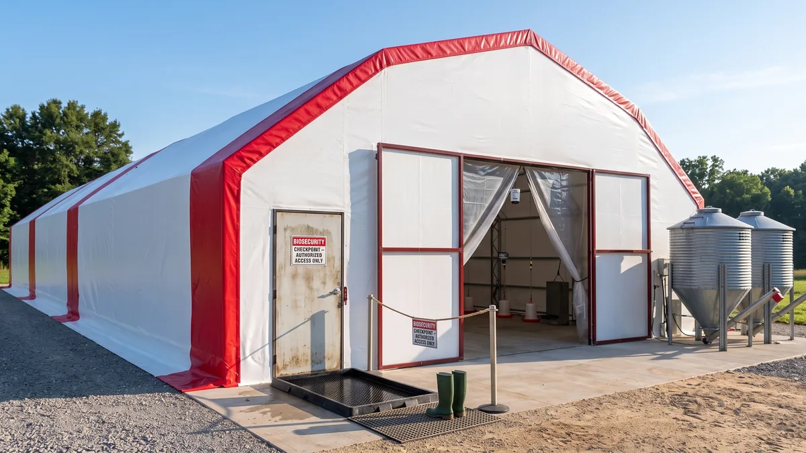

Kümeste biyogüvenlik: kuş gribi ve hastalıktan korunma
Bir sabah kümese girip beş tavuğu birden ölü bulmanın en büyük sebebi çoğu zaman rüzgâr değil, senin bir gün önce ödünç aldığın yemliktir. Hastalığı kapıda durduran biyogüvenliği sahadan anlatıyorum.

Sürüyü hastalıktan koruma işini çoğu üretici ilaç dolabında sanır. Değildir. Hastalık kümese ilaçla değil, ayakla, tekerlekle, kanatla girer. Komşunun kümesinden ödünç aldığın yemlik, sabah tarladan çamurlu çizmeyle geçtiğin kapı, pazardan aldığın "ucuza gelsin" dediğin iki tavuk, gölden inen bir yaban ördeğinin senin gezinti alanına bıraktığı bir tutam pislik. Bulaşık kapıdan girer, ilaç ise ancak girdikten sonra yetişebilirse yetişir. İşte biyogüvenlik dediğimiz şey, o kapıyı kapatma sanatıdır; pahalı bir şey değil, disiplin isteyen bir şeydir.
Bir de şu var: bazı hastalıklarda ilacın hiç devreye girmez. Kuş gribinin yüksek patojenli tipi (HPAI) bir kümese girdiğinde tedavi diye bir şey yoktur; sürü günler içinde kırılır, resmi tespit edilirse çevredeki hayvanlar da itlaf edilir. Yani burada tek silahın önleme. Gel kapıdan neyin girdiğine ve o kapıyı nasıl kapatacağına bakalım.
Hastalık kümese nereden girer? Dört kapı
Yıllarca sahada gördüğüm kadarıyla bulaşın neredeyse tamamı şu dört yoldan gelir. Adını koyarsan önlemini de koyarsın.
- Yeni alınan hayvan: En sinsi kaynak. Dışarıdan sağlam görünen bir tavuk, kuluçkasında taşıdığı hastalığı kümesine sokar. Pazardan, komşudan, aracıdan gelen her kanatlı şüphelidir.
- İnsan ve ayakkabı: Başka bir kümesi gezip sonra seninkine giren bir ziyaretçi, çizmesinin altındaki çamurla onlarca etkeni taşır. Yem bayii, veteriner, meraklı komşu... hepsi kapıdan bulaş getirebilir.
- Ödünç ekipman ve araç: Ödünç yemlik, ödünç kafes, yumurta viyolü, hatta köyün ortak römorku. Bir kümesten diğerine gezen her demir parçası bulaş taşır.
- Yabani kuş ve kemirgen: Kuş gribinin bir numaralı taşıyıcısı göçmen su kuşları; ördek, kaz, yaban kazı. Fare ve sıçan ise iç ortamda etkeni gezdirir, yeme bulaştırır.
Kuş gribi (HPAI) riski neden bu kadar ciddi?
Kuş gribini sıradan bir hastalık gibi görme. Yüksek patojenli tipi bir sürüde ölüm oranını birkaç gün içinde ciddi seviyelere çıkarır; sabah on sağlam tavuk, akşam yerde. Belirtiler ani gelir: aniden düşen yumurta, morarmış ibik ve sakal, şişmiş baş, burun akıntısı, ishal, dengesiz yürüyüş ve toplu ölüm. Tedavisi yoktur, ticari bir sağaltımı da yoktur. Bu yüzden mesele hastayı iyileştirmek değil, hastalığı hiç sokmamaktır.
Riskin kaynağı büyük ölçüde göç yollarıdır. Sonbahar ve ilkbahar göç mevsimlerinde kuzeyden inen su kuşları etkeni taşır. Senin tavuğun göletten su içen bir yaban ördeğiyle aynı çamura bastığında, aynı su birikintisinden içtiğinde bulaş köprüsü kurulur. Bu yüzden gribin en tehlikeli olduğu dönem, bu geçiş mevsimleridir. Türkiye bu göç yollarının tam üstünde; sahil şeridi, göller bölgesi ve sulak alanlara yakın kümeslerde risk katbekat artar.
Pratik sonuç şu: göç mevsiminde gezinti alanını yaban kuşuna, onların pisliğine ve durgun suya kapatacaksın. Bunu becerirsen riskin büyük kısmını daha baştan sıfırlarsın.
Yem ve suyu kapat, gezintiyi ört
Yaban kuşu senin kümesine üç şey için gelir: dökülmüş yem, açık su ve rahat bir konaklama yeri. Üçünü de kes.
- Yemi kapalı tut. Yemi asla açık tekneye dökme, gece dışarıda bırakma. Kapalı siloda ya da kapaklı varilde sakla. Dışarı dökülen her avuç yem, serçeden yaban güvercinine kadar bütün kuşları davet eder.
- Suyu içeri al ya da üstünü ört. Açık su yalağı hem yaban kuşunu çeker hem durgun suda etken birikir. Nipelli kapalı suluk en güvenlisi. Suluk düzenini tavukların su tüketimi ve suluk sistemi yazısına göre kur.
- Gezinti alanının üstünü ört. Riskli mevsimde gezinti alanının üstünü file ya da gölgelik brandayla kapatmak, yaban kuşu pisliğinin doğrudan tavuğun üstüne düşmesini engeller. Gezinti alanını planlarken bunu baştan hesaba kat; gezen tavuk sistemi kurmak yazısında çit ve barınak düzenini anlattım.
- Durgun suyu kurut. Bahçedeki su birikintileri yaban kuşu için mola noktasıdır. Çukuru doldur, akışı yönlendir.
Yeni tavuğu asla doğrudan sürüye katma: karantina
Bu tek kuralı uygulasan hastalıkların yarısından kurtulursun. Dışarıdan gelen hiçbir kanatlıyı, ne kadar sağlam görünürse görünsün, doğrudan sürünün içine salma. Ayrı bir bölmede, sürüden en az 10 metre uzakta, 2-3 hafta karantinada tut. Bu sürede hasta olan belirti verir; verirse zaten tek başına ayırmış olursun, tüm sürünü kurtarırsın.
Karantinada dikkat edeceklerin: yeni hayvana ayrı yemlik-suluk kullan, ona en son bak (önce sağlam sürü, sonra karantina; asla tersi), karantinadan çıkarken ellerini yıka çizmeni değiştir. Bu iki üç hafta uzun gelir ama bir sürüyü baştan kurmanın maliyetiyle kıyaslayınca ucuzun da ucuzudur. Yarka alırken nakliye ve ilk hafta yönetimini yarka alırken nelere dikkat edilmeli yazısında ayrıntılandırdım; oradaki ilk hafta kurallarını karantinayla birleştir.
Çizme, paspas ve dezenfeksiyon: kapıyı kilitle
Kümes kapısı, bulaşın en çok geçtiği eşiktir. Buraya bir sınır çek. En basit ve en etkili düzenek şudur:
- Kümese özel çizme. Kümese girerken giydiğin çizme, sadece kümesin çizmesi olsun. Tarlada, köyde, başka kümeste gezdiğin ayakkabıyla içeri girme. Girişte çizme değiştir.
- Dezenfeksiyon paspası. Kapının önüne içinde dezenfektan çözeltisi bulunan sığ bir paspas ya da leğen koy. Her girişte çizmeni bas. Çözelti kirlendikçe, çamurlandıkça tazele; kirli paspas işe yaramaz, hatta bulaş kaynağıdır.
- Ziyaretçiyi sınırla. Kümesine kimin girdiğini bil. Başka kümesi olan komşuyu içeri alma, gerekiyorsa temiz galoş ve önlük ver. "Bir bakıvereyim" diyen herkesi içeri buyur etme.
- Ödünç ekipmanı içeri sokma. Sokman gerekiyorsa önce yıka ve dezenfekte et. Yumurta viyolünü bile başka üreticiyle ortak kullanma.
Boş kümesi yeni sürü öncesi baştan dezenfekte etmek de işin ayrı bir parçası. Altlığı tamamen boşalt, yüzeyi yıka, kuruttuktan sonra uygun dezenfektanla ilaçla ve birkaç gün boş dinlendir. Bu "boş bırakma" süresi zincirin en zayıf halkasını, yani bir önceki sürüden kalan etkeni kırar.

1.000 Tavukluk Tavuk Çadırı
Biyogüvenliğin yarısı yıkanabilir, dezenfekte edilebilir bir yüzeyle başlar; TSE damgalı brandası pürüzsüz, silinip ilaçlanabilen 1000 tavukluk Tavuk Çadırı, betonun çatlağına sinen etkeni barındırmaz ve 81 ilde anahtar teslim kurulur.
Kemirgen, ölü hayvan ve ihbar yükümlülüğü
Fare ve sıçan sadece yem çalmaz; kümesin içinde etkeni gezdirir, yeme ve suya pislik bulaştırır. Kemirgen kontrolü biyogüvenliğin ayrılmaz parçasıdır. Yemi kapalı tut, delikleri kapat, düzenli mücadele et. Fare ve haşere mücadelesinin rutinini kümeste fare, sıçan ve haşere kontrolü yazısına göre kur. Dış parazitler de sürüyü zayıf düşürüp hastalığa açık hale getirir; bit ve akar kontrolünü tavuklarda bit ve kırmızı akar yazısındaki aylık rutinle sürdür.
Şunu net söyleyeyim: ani ve toplu ölüm gördüğünde bunu kendi başına gömüp geçme. Kısa sürede birkaç hayvanın birden ölmesi, ibik morarması, toplu solunum belirtisi kuş gribi şüphesi doğurur ve bu, bildirilmesi zorunlu bir durumdur. En yakın İlçe/İl Tarım ve Orman Müdürlüğü'ne ya da veteriner hekime derhal haber ver. İhbar senin yükümlülüğün; hem kendi sürünü hem köyün diğer kümeslerini korur. Ölü hayvanı elleyip başka yere taşıma, açıkta bırakma, satma; yetkili gelene kadar ölüyü kapalı bir yerde beklet. Bu bir bürokrasi değil, komşularının sürüsünü de kurtaran bir sorumluluk.
Biyogüvenlik kontrol listesi
Aşağıdaki listeyi kümes kapısının arkasına asabilirsin. Her satır, kapatılması gereken bir kapıdır. Sıklık sütununa göre uygula.
| Önlem | Ne yapılır | Sıklık |
|---|---|---|
| Yeni hayvan karantinası | Sürüden ayrı, 10+ m uzakta bekletme | Her yeni alımda 2-3 hafta |
| Çizme değişimi | Kümese özel çizme, girişte değiştir | Her girişte |
| Dezenfeksiyon paspası | Kapıda çözeltiye bas, kirlenince tazele | Her girişte / haftalık tazeleme |
| Yem-su kontrolü | Kapalı sakla, açıkta bırakma | Her gün |
| Gezinti üstü örtme | File / brandayla yaban kuşuna kapat | Göç mevsiminde sürekli |
| Kemirgen mücadelesi | Delik kapat, tuzak/yem istasyonu | Aylık kontrol, sürekli |
| Ölü hayvan takibi | Toplu ölümde yetkiliye ihbar | Görüldüğü an |
| Boş kümes dezenfeksiyonu | Boşalt, yıka, ilaçla, dinlendir | Her sürü değişiminde |
Bu tabloyu bir aşı programıyla birleştirdiğinde savunman tamamlanır. Biyogüvenlik hastalığı kapıda durdurur, aşı ise içeri sızanı karşılar. Aşı takvimini ve sürüyü koruyan temel kuralları tavuk hastalıkları: belirtiler, aşı takvimi ve 5 kural yazısında adım adım verdim; bu iki yazıyı birlikte oku.
Barınak da biyogüvenliğin bir parçasıdır
Şunu çok az kişi düşünür: kümesin yüzeyi biyogüvenliğin bir parçasıdır. Çatlamış beton, gözenekli tuğla, paslı sac; etkenin sindiği, dezenfektanın ulaşamadığı yerlerdir. Bir sürü hastalık atlattıysan ve o kümesi bir türlü tam temizleyemiyorsan sorun ilaçta değil, yüzeydedir. Yıkanabilir, silinebilir, pürüzsüz bir yüzey dezenfeksiyonu kolaylaştırır. Yalıtımlı brandalı bir çadır kümes hem bu temizliği kolaylaştırır hem yeni sürüyü hızla, temiz bir zeminde başlatmanı sağlar. Betonarme mi çadır mı diye kafan karışıksa kümes maliyeti: betonarme mi çadır mı karşılaştırmasına göz at.
En son şunu aklında tut: biyogüvenlik pahalı bir şey değil, disiplinli bir şeydir. Bir kova dezenfektan, bir çift ayrı çizme, kapıda bir paspas ve "her yeni tavuğu üç hafta ayrı tut" kuralı. Toplamı birkaç yem çuvalının parasını geçmez ama bir sürüyü baştan kurmanın maliyetini, hatta çevredeki bütün kümeslerin itlafını önler. Kapıyı kapalı tut. Hastalık, açık bıraktığın o kapıdan girer.
Sık sorulanlar
Kümese hastalık en çok nereden bulaşır?
Kuş gribinden korunmak için ne yapmalıyım?
Yeni aldığım tavuğu ne kadar karantinada tutmalıyım?
Kümes girişinde dezenfeksiyon paspası şart mı?
Toplu tavuk ölümünü bildirmek zorunda mıyım?
Kemirgen kontrolü biyogüvenlikle ne alakalı?
Projenizi birlikte planlayalım
Kapasitenizi ve bölgenizi yazın; ölçü ve teklifi birlikte çıkaralım.
Kapasitenizi yazın